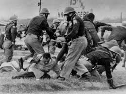
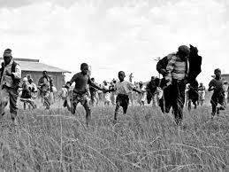
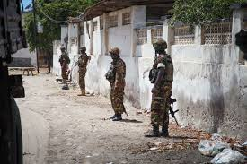
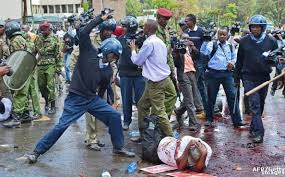
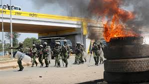
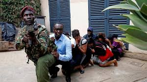
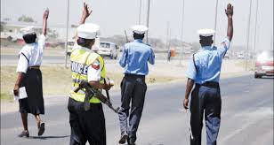
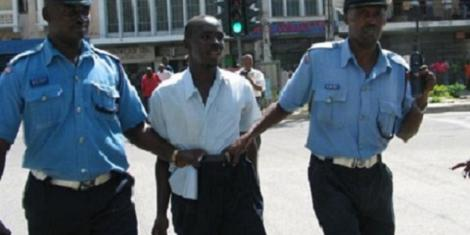
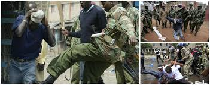

THE ROLE OF POLICE IN SOUTH AFRICA DURING APARTHEID
During apartheid in South Africa, the police were there to protect the whites and magnify the racial discrimination in the country. This is clearly brought out by Trevor Noah in his book, 'Born a Crime'. Some of their roles are listed below:
- Maintaining order.
Whenever the citizens rebelled or held strikes in protests against the apartheid system, the police were called upon to restore order. There were only two roads in and out of Soweto; thus the police would confine the citizens within Soweto and massacre them. In case the citizens tried to escape, the air force would intervene and throw bombs at them.

- The police instilled fear in the citizens.
Trevor's mother would walk with him while applying extreme precautions. She would hold his hand or carry him; but in case the police appeared, she would drop him quickly and pretend he wasn't her child. This was because Trevor was a colored child and the mum black.
The citizens were always on the run to avoid being caught by the police.

- Friendly to the whites.
The police were mainly known for harassing the black people and the colored ones. It is written that police were rarely seen in the white areas, and that if one saw one it was a friendly officer in his collared shirt and pressed pants.
- Militarized officers to the blacks.
In Soweto, the police didn't wear collared shirts; they wore riot gear. They operated in teams known as flying squads, because they would swoop in out of nowhere and terrorize the citizens. All Trevor Noah could hear at such times were gunshots, screams and tear gas being fired into the crowds.
- Capturing colored kids.
Trevor's grandmother always restricted Trevor from going out since the police would take him. The police would take a colored kid, strip the custody from his parents and send him off to an orphanage.
- Enforcing the laws
The police demanded that Robert converts his restaurant to either a 'whites only' restaurant like all the rest were or build separate toilets for each of the races that existed despite him having the license that allowed his business to serve all races. He closed down as a result since none of the options appeared favourable to him or the business.
The police were there to ensure that there were no interracial relationships. In case they happened and a coloured child was born, the child was captured and taken to the orphanage and the mother arrested and sentenced to a jail term of five years.
- Helping the citizens.
Patricia, Trevor's mum, called the police to help them get home safely while they were at the 24-hour petrol station. Patricia and Trevor had jumped from a moving car moments before calling the police in order to escape some cruel driver who had planned to harm them.
- Enhancing racial discrimination.
The police, in conjunction with the government, created and showed a clear boundary between the different races. For instance, the police were good to the whites but hostile to the blacks.
- Arresting the law breakers
The police arrested a person who had been accused of killing using thunder in the name of witchcraft.

In general, the police did more harm than good. This is quite expected as they were under the apartheid system and had to support the government in oppressing the citizens.
THE ROLE OF THE POLICE OFFICERS IN KENYA TODAY
The police force is a body of officers representing the civil authority of the government. In Kenya, recruits undergo thorough training before they can join the police force. The police have several duties, some of which are listed below:
- Maintaining public order and safety.
The police ensure public safety by being alert at all times in case of an emergency call. There have been several police projects due to insecurity like the 'Operation Linda Nchi' initiative that involved the police deploying extra measures in guarding the people including being there at all times.
Secondly, the police are called upon at times when there are disorders among the public like strikes. Their approach is usually scattering the protestors using tear gas or shooting rubber bullets at them to prevent the protestors from disrupting normal activities too much.
Next, in cases of terror attacks like by the Al-Shabab, the police come in to rescue the victims. They actually risk their lives for the sake of the citizens.
Lastly, the police are also in charge of road safety. They check for un-road-worthy vehicles on the roads, reckless drivers, ensure observance of the traffic lights and rules. They also ensure that the indicated speed limits are not exceeded by the drivers. However, this is never as efficient as it should be since some police officers are corrupt and let reckless drivers slip by on the condition that they are bribed.

- Enforcing the law.
The police enforce the law by arresting the law breakers or the suspects for them to face the consequences of their actions and thus possibly change. The arrested ones then face trial in court and face the consequence of their crime if found guilty.

- Preventing, detecting and investigating criminal activities.
In their night patrols, the officers are usually trying to prevent crime from happening. They stay very alert at these times so that they can detect any suspicious activity and prevent something bad from happening. In the 2007-2008 post-election violence, the police introduced curfews so as to prevent night killings from happening.
- Abuse of their power and weapons.
The Kenyan police are usually involved in many cases of killing each other or their families and friends or even aiding the criminals in making their crimes successfully accomplished. They are also corrupt in most cases, and let people who bribe them get away with great crimes.
The police take advantage of people as they go about their duties. For example, they rape girls they find roaming outside late in the night as a blackmail to save the girls from being arrested.
In conclusion, the police have a responsibility towards the Kenyan citizens, as defined by their slogan, 'Utumishi kwa Wote' but they hardly fulfill it. They are carried away by the desire to have more money than their salaries allows them to have and also the thirst to prove that they are different from the rest and privileged as well.